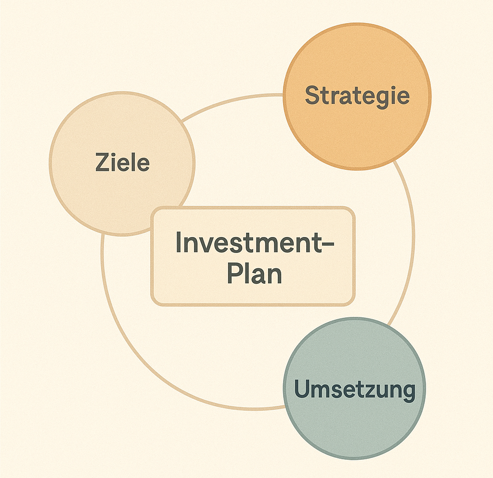

18 Der einfache Investment-Plan, der wirklich funktioniert
Wenn du die letzten Kapitel gelesen hast, kennst du inzwischen viele Puzzleteile: Rendite, Risiko, Diversifikation, ETFs, Faktoren, Rebalancing, Fehlerpsychologie. Doch all dieses Wissen bringt dir nur dann wirklich etwas, wenn du es in eine feste Struktur gießen kannst, die du langfristig durchhältst. Genau darum geht es in diesem Kapitel: um deinen persönlichen Investment-Plan. Nicht die komplizierte Wall-Street-Variante, sondern ein klarer, alltagstauglicher und langfristig wirksamer Plan, der für Anfänger genauso funktioniert wie für Fortgeschrittene.
Und eines kann ich dir versprechen: Egal wie chaotisch die Finanzmärkte erscheinen, wie laut die Nachrichten schreien oder wie nervös andere werden – ein guter Investment-Plan ist dein Ruhepol. Er ist das Gegenmittel gegen Panik, Übermut, FOMO und impulsives Handeln. Und: Er bringt dich näher an deine Ziele, ohne dass du täglich darüber nachdenken musst.

18.1 Warum ein Investment-Plan wichtiger ist als jede Strategie
Bevor wir in die konkrete 6-Schritte-Regel einsteigen, lass uns kurz klären, was ein Investment-Plan eigentlich leistet – und warum er so mächtig ist.
Die meisten Menschen scheitern nicht an fehlendem Wissen. Sie scheitern an:
👉 fehlender Konsequenz
👉 emotionalen Entscheidungen
👉 unklaren Zielen
👉 fehlenden Routinen
👉 impulsiven Handlungen in Stresssituationen
Ein Investment-Plan löst genau diese Probleme. Er sagt dir:
👉 Wann du investierst
👉 Wie viel du investierst
👉 Worin du investierst
👉 Wie du auf Krisen reagierst
👉 Wie oft du dein Portfolio überprüfst
Kurz gesagt:
Ein Plan nimmt die Emotionen aus dem Prozess.
Er verwandelt ein potenziell chaotisches Thema in eine automatisierte Gewohnheit. Und Gewohnheiten gewinnen immer gegen Motivation.
18.2 Story: Der Unterschied zwischen „Plan“ und „Gefühl“ – ein Jahr an der Börse
Stell dir zwei Personen vor: Lea und Jonas. Beide sind 22, beide verdienen etwas Geld neben dem Studium, beide wollen „endlich richtig investieren“.
Lea startet ohne Plan. Sie schaut Videos, liest Posts, folgt „Finfluencern“ und handelt so, wie sie es gerade für richtig hält. Mal investiert sie schnell, mal gar nicht, mal verkauft sie wieder. Sie schwankt ständig zwischen „Ich muss sofort kaufen“ und „Oh nein, besser abwarten“.
Jonas beginnt mit genau dem gleichen Wissen – aber er schreibt einen einfachen Investment-Plan. Ein DIN-A4-Blatt. Darauf stehen:
- 200 € monatlicher Sparplan
- 80 % Welt-ETF, 20 % Faktor-ETF Momentum
- Einmal jährlich Rebalancing im Januar
- Portfolio nur viermal pro Jahr checken
- Nie aus Panik verkaufen
- Im Crash weiter besparen
Nach einem Jahr unterscheidet sich ihr Verhalten dramatisch:
- Lea hat zigmal die Strategie gewechselt und fühlt sich nervöser als je zuvor.
- Jonas hat 12 Monate investiert, ohne darüber nachdenken zu müssen. Er fühlt sich ruhig – und ist stolz.
Beide hatten dieselben Marktbedingungen. Doch nur einer hat einen Plan, der ihn geschützt hat.
Diese Geschichte ist nicht übertrieben – sie passiert tausendfach genauso.
👉 Disziplin schlägt Talent. Und ein Plan erzeugt Disziplin.18.3 Die 6-Schritte-Regel: Deine persönliche Roadmap
Jetzt wird’s praktisch. Dieser Abschnitt ist die Essenz moderner Anlagepsychologie, wissenschaftlicher Studien, Erfahrungswerte aus der Vermögensverwaltung – und tausenden Anlegergeschichten.
Das Ziel ist ein Investment-Plan, der:
- leicht zu verstehen ist
- ohne Fachwissen funktioniert
- krisensicher ist
- langfristig Rendite bringt
- zu deinem Leben passt
Hier kommt sie: die 6-Schritte-Regel, die du dir ausdrucken, einrahmen oder als Smartphone-Notiz speichern kannst.
18.3.1 Schritt 1: Definiere deine Ziele klar – und ehrlich
Dein Plan beginnt mit dem „Warum“. Ohne ein klares Ziel wird jede Krise zum emotionalen Problem. Mit Ziel dagegen kannst du Schwankungen besser ertragen.
Gute Ziele sind:
👉 konkret: „Ich möchte mit 35 ein Finanzpolster von X € haben.“
👉 zeitlich: „Ich investiere langfristig für meine Altersvorsorge.“
👉 realistisch: „Jeden Monat 150 € investieren.“
Schlechte Ziele sind:
👉 „Schnell reich werden.“
👉 „Ich will die beste Strategie finden.“
👉 „Ich möchte mehr Rendite als alle anderen.“
Ein Investor ohne Ziel reagiert auf Marktbewegungen wie ein Boot ohne Kompass auf hohe Wellen. Ein Investor mit Ziel? Der weiß, wo er hinfährt – egal wie die Wellen schlagen.
Deine Aufgabe: Schreibe ein einziges Hauptziel auf. Nicht fünf, nicht zehn. Eins.
18.3.2 Schritt 2: Lege deine monatliche Anlagehöhe fest
Menschen überschätzen, was sie spontan leisten können, und unterschätzen, was sie automatisch schaffen.
Die Wissenschaft ist hier eindeutig:
👉 Regelmäßige kleine Beiträge schlagen unregelmäßige große.
👉 Automatisierung führt zu besseren Ergebnissen.
👉 Wer den Sparbetrag automatisiert, hält ihn doppelt so lange durch.
Wähle also einen Betrag, den du langfristig durchhalten kannst. Viele junge Anleger starten mit 25–200 € monatlich – das reicht vollkommen.
Wichtig: Dein Betrag sollte sich nicht wie ein Opfer anfühlen. Du musst ihn entspannt zahlen können.
Wenn du nicht sicher bist: Wähle am Anfang einen kleineren Betrag und erhöhe später.
18.3.3 Schritt 3: Wähle ein einfaches Basis-Portfolio
In Kapitel 12 hast du gelernt, wie simpel ein gutes Basis-Portfolio sein kann. Der Investment-Plan enthält hier:
👉 deine ETF-Auswahl
👉 deine Gewichtung
👉 deinen Rebalancing-Zeitpunkt
👉 optional deinen Faktor-Anteil
Beispiel für Anfänger:
👉 80 % MSCI World oder FTSE All-World
👉 20 % Emerging Markets
Beispiel für Fortgeschrittene:
👉 85 % Welt-ETF
👉 10 % Faktor (Momentum oder Value)
👉 5 % Anleihen oder Cash-Komponente
Der genaue Mix ist weniger wichtig, als viele denken. Entscheidend ist, dass du konsequent investierst.
18.3.4 Schritt 4: Lege klare Regeln für turbulente Zeiten fest
Dieser Schritt ist der wichtigste überhaupt. Denn Crashs werden kommen. Immer. Sie gehören zum Investieren dazu wie Regen zum Wetter.
Die Forschung zeigt eindeutig:
Anleger verlieren nicht wegen Krisen Geld, sondern wegen ihrer Reaktionen darauf.
Dein Plan muss diese schwächste Stelle schützen.
Schreibe deshalb klare Regeln auf, zum Beispiel:
👉 „Ich verkaufe niemals aus Angst.“
👉 „Ich investiere weiter – auch in Krisenzeiten.“
👉 „Ich schaue mein Depot in Crashphasen nur einmal pro Monat an.“
👉 „Ich orientiere mich an meinem langfristigen Ziel, nicht an kurzfristigen Nachrichten.“
Wenn eine Krise kommt, wirst du emotional reagieren. Das ist normal. Doch der Plan ersetzt in diesem Moment deine Emotionen durch klare Entscheidungen.
18.3.5 Schritt 5: Definiere einen Jahresrhythmus
Ein Investment-Plan ist kein starres Dokument. Er lebt. Doch er lebt strukturiert.
Guter Rhythmus:
👉 Monatlich: Automatischer Sparplan
👉 Quartalsweise: Kurzer Depotcheck
👉 Jährlich: Rebalancing + Plan-Review
👉 Alle 3–5 Jahre: Größerer Abgleich deiner Lebensziele
Das ist alles. Kein tägliches Schauen, kein stundenlanges Analysieren.
Das Ziel:
Reduziere die Zeit, die du mit Investieren verbringst – nicht erhöhe sie.
Ein häufiger Fehler: Anleger denken, „mehr Arbeit“ bedeute „bessere Ergebnisse“. In Wahrheit ist das Gegenteil der Fall. Weniger Handeln = mehr Erfolg.
18.3.6 Schritt 6: Schreibe deinen Plan auf – und mach ihn verbindlich
Das ist der wichtigste Satz dieses Kapitels:
Ein Plan, der nicht schriftlich festgehalten ist, ist kein Plan, sondern eine Idee.
Du brauchst ein Dokument: Ein Blatt Papier, eine Notiz, eine kleine PDF – völlig egal.
Dort stehen:
👉 deine Ziele
👉 dein Sparbetrag
👉 deine Portfolio-Zusammensetzung
👉 deine Regeln für Krisen
👉 dein Jahresrhythmus
Optional kannst du hinzufügen:
👉 wann du dein Depot anschaust
👉 welche Nachrichten du ignorierst
👉 welche Fehler du vermeiden willst
Manche machen es formell: Sie unterschreiben ihren Investment-Plan.
Andere hängen ihn an die Wand.
Wichtig ist:
Er ist sichtbar und griffbereit, wenn du ihn brauchst.
18.4 Warum dieser Plan funktioniert – wissenschaftliche Basis
Dieser 6-Schritte-Plan baut auf Erkenntnissen aus:
- Verhaltensökonomie (Kahneman, Thaler)
- Portfoliotheorie
- Habit-Forschung
- Studien über langfristiges Anlegerverhalten
- empirischen Daten zu Sparplänen
- den bekannten Biases wie Overconfidence oder Loss Aversion
Die Essenz all dieser Erkenntnisse lautet:
- Menschen überschätzen ihre Fähigkeit, rational zu bleiben.
- Märkte schwanken stärker als das eigene Nervensystem.
- Automatisierung schützt vor impulsiven Fehlern.
- Einfache Strategien schlagen komplizierte in der Realität.
- Kontinuität ist wichtiger als Perfektion.
Deshalb funktioniert ein klarer, einfacher, schriftlicher Plan.
Immer. Für jeden. In jedem Marktumfeld.
18.5 Wie sich ein guter Plan im Alltag anfühlt
Ein guter Investment-Plan:
- befreit dich vom ständigen Nachdenken
- reduziert Stress
- gibt dir Orientierung
- verhindert Panik
- sorgt für Routine
- macht Investieren unsichtbar und leicht
- hält dich langfristig auf Kurs
Nach einigen Monaten merkst du: Du „investierst“ gar nicht mehr – du bist ein Investor.
Es wird so normal wie Zähneputzen.
Im ersten Teil dieses Kapitels hast du die sechs Schritte kennengelernt, die deinen Investment-Plan zu einem echten Begleiter machen – nicht nur auf dem Papier, sondern in deinem Alltag. Jetzt geht es darum, das Ganze praktisch umzusetzen. Du bekommst nachfolgend eine konkrete Vorlage, typische Stolpersteine, Anti-Stress-Regeln und die gewohnten Abschlussrubriken, die dir helfen, das Gelernte zu verinnerlichen.

18.6 Die Investment-Plan-Vorlage: Dein persönlicher 1-Seiten-Plan
Viele Anleger scheitern daran, dass sie ihre Regeln zu kompliziert formulieren oder auf zehn Seiten ausarbeiten wollen. Doch Studien zeigen: Je kürzer der Plan, desto eher wird er umgesetzt.
Deshalb bekommst du jetzt die 1-Seiten-Vorlage, die du exakt so übernehmen oder nach deinen Bedürfnissen anpassen kannst. Druck sie aus, notiere deine Entscheidungen – und du bist bereit.
Meine Ziele
- Ich investiere langfristig, um _______ zu erreichen.
- Mein Zeithorizont beträgt mindestens _______ Jahre.
- Ich möchte mir ein finanzielles Polster aufbauen für: _______.
Meine monatliche Sparrate
- Ich investiere monatlich automatisch _______ €.
- Dieser Betrag ist realistisch und verursachte keinen Stress.
Meine Portfolio-Zusammensetzung
- Basis-Portfolio:
– _______ % Welt-ETF
– _______ % EM oder weitere ETFs
- Optional: Faktor-Beimischung:
– _______ % Momentum / Value / Quality / Low Risk
Mein Rebalancing-Rhythmus
- Ich rebalanciere einmal pro Jahr im Monat _______.
- Ich passe meine Sparrate an, falls sich mein Einkommen dauerhaft verändert.
Meine Regeln für turbulente Marktphasen
- Ich verkaufe niemals aus Angst.
- Ich führe meinen Sparplan konsequent fort – auch bei starken Schwankungen.
- Ich schaue mein Depot in Krisen maximal _______ Mal pro Monat an.
- Ich ignoriere Panikmeldungen in den Medien.
Meine Überprüfungsroutine
- Quartalscheck: kurze Sichtung, keine Änderungen außer bei gravierenden Lebensereignissen.
- Jahrescheck: Rebalancing + Zielkontrolle.
- Alle 3–5 Jahre: Anpassung der Strategie, falls meine Lebenslage es erfordert.
Diese Struktur ist bewusst einfach gehalten. Sie gibt dir genug Klarheit, um strukturiert zu handeln – aber nicht so viele Details, dass der Plan zu einer „Regelmaschine“ wird, die du in der Realität nie durchhältst.
18.7 Warum viele Pläne scheitern – und wie du das verhindern kannst
Viele Anleger setzen sich einen Plan, halten ihn aber nicht durch. Nicht, weil sie undiszipliniert wären, sondern weil sie typische Fehler machen. Lass uns die wichtigsten Stolpersteine anschauen – und wie du sie vermeidest.
1. Der Perfektionismus-Falle
Viele Einsteiger wollen den perfekten Plan schreiben. Sie fragen sich:
- Welcher ETF ist wirklich der beste?
- Was ist die optimale Gewichtung?
- Ist Momentum besser als Value?
- Sollte ich jeden Monat oder alle zwei Wochen investieren?
Die Wahrheit: Es gibt keinen perfekten Plan. Nur einen, der zu dir passt.
Ein guter Plan ist nicht perfekt – er ist stabil.
So vermeidest du die Falle: Beende deinen Plan innerhalb von 48 Stunden. Triff Entscheidungen. Starte. Optimierung kommt später.
2. Zu viele Regeln
Manche schreiben zehn Seiten: Regeln für Börsencrashs, für Boomphasen, für politische Krisen, für einzelne Branchen.
Das Problem: Je komplexer dein Plan, desto eher brichst du ihn.
Erinnerung: Der Plan soll dich befreien, nicht belasten.
3. Der „Ich halte mich schon daran“-Irrtum
Viele sagen: „Ich muss das nicht aufschreiben, ich weiß ja, was ich vorhabe.“
Falsch.
Studien sind eindeutig: Nur schriftlich festgehaltene Regeln beeinflussen Verhalten langfristig. Gedanken verfliegen im Stress. Schrift bleibt.
4. Zu hoher Sparbetrag
Ein häufiger Fehler: Man startet zu ehrgeizig und merkt nach zwei Monaten, dass es doch knapp wird.
Besser: Klein anfangen und später erhöhen.
Ein Investment-Plan, den du nicht einhalten kannst, ist wertlos.
5. Zu häufiges Anpassen
Manche ändern ihren Plan bei jeder Marktbewegung. Das Ergebnis: Chaos.
Erinnerung: Dein Plan ist dein Schutzschild vor Impulsen – nicht deren Spielball.
Passe ihn nur an, wenn sich dein Leben verändert, nicht wenn der Markt zappelt.
18.8 Die Anti-Stress-Regeln erfolgreicher Anleger
Die folgenden Regeln stammen aus Verhaltensforschung, Behavioral Finance und den Erfahrungen vieler Vermögensverwalter. Du kannst sie in deinen Plan integrieren oder separat als Erinnerung aufhängen.
Regel 1: Vertraue dem Prozess, nicht dem Gefühl
Gefühle sind kurzfristig. Investieren ist langfristig.
Wenn du unsicher bist, vertraue deinem Plan.
Regel 2: Realisiere, dass Crashs normal sind
Ein Crash ist kein Systemfehler – er ist Bestandteil von Rendite.
Du wirst mehrere Crashs erleben. Und jeder davon wird sich extrem wichtig anfühlen. Doch aus historischer Sicht waren sie nur vorübergehende Phasen.
Regel 3: Du musst nicht jedes Jahr gewinnen
Erfolgreiche Anleger akzeptieren, dass manche Jahre schlecht laufen. Der Trend über Jahrzehnte zählt.
Regel 4: Diversifikation schützt vor Überraschungen
Kein Mensch kann sagen, welcher Markt im nächsten Jahr gewinnt. Diversifikation schützt dich davor, falsche Wetten zu platzieren.
Regel 5: Dein größtes Risiko ist nicht der Markt – sondern du selbst
Panik, Gier, Übermut, Verunsicherung – all das kann dir mehr schaden als jeder Crash.
Dein Plan ist auch dein emotionales Sicherheitsnetz.
18.9 Wie du deinen Plan im Alltag wirklich lebst
Ein guter Plan bringt dir wenig, wenn du ihn nicht in Routinen verwandelst. Hier sind zwei Techniken, die wissenschaftlich bestätigt sind und sich im Alltag bewährt haben:
1. Die „Vorausentscheidung“
Eine Vorausentscheidung ist eine Regel, die bereits definiert, wie du in einer bestimmten Lage handelst.
Beispiele:
👉 „Wenn der Markt stark fällt, investiere ich weiter.“
👉 „Wenn ich Zweifel habe, warte ich 7 Tage und treffe dann erst eine Entscheidung.“
Diese Technik reduziert impulsive Fehlentscheidungen drastisch.
2. Das „Einmal-pro-Woche-Fenster“
Lege einen Tag fest, an dem du dich maximal 10 Minuten mit Finanzen beschäftigst – z. B. Sonntagabend.
In dieser Zeit darfst du:
👉 dein Depot kurz ansehen
👉 Nachrichten aus Filtern checken
👉 deinen Plan durchlesen
Außerhalb dieses Zeitfensters:
Keine Finanzentscheidungen.
Das schützt dich vor impulsiven Reaktionen.
18.10 Beispiel: So sieht ein richtiger Investment-Plan im Leben aus
Sagen wir, du heißt Sam, bist 26 Jahre alt und möchtest mit 150 € monatlich investieren.
Dein Plan könnte so aussehen:
- Ziel: In 20 Jahren ein Polster von mindestens 60.000 € aufbauen
- Portfolio: 80 % Welt, 20 % EM
- Faktor-Beimischung: 10 % Momentum (optional)
- Rebalancing: jedes Jahr im Februar
- Depotcheck: alle drei Monate
- Krisenregeln: keine Verkäufe wegen Angst, Sparplan läuft weiter
- Anpassung: alle 3–5 Jahre oder wenn sich das Einkommen deutlich ändert
So ein Plan ist nicht spektakulär. Aber er ist belastbar. Und das macht ihn wertvoll.
18.11 Was du aus diesem Kapitel mitnehmen solltest
► Ein Investment-Plan schützt dich besser als jede Strategie.
► Automatisierung sorgt dafür, dass du langfristig durchhältst.
► Ein guter Plan ist einfach, schriftlich festgehalten und realistisch.
► Disziplin entsteht nicht durch Motivation, sondern durch klare Regeln.
► Emotionale Entscheidungen sind der größte Feind des Investors.
► Die 6-Schritte-Regel ist deine Roadmap für jahrzehntelangen Erfolg.
► Ein schlechter Plan, der durchgehalten wird, ist besser als ein perfekter, der scheitert.18.12 Zum Nachdenken
Warum gibt es so viele Menschen, die „über Finanzen nachdenken“, aber so wenige, die wirklich investieren? Warum fühlen sich Crashs so dramatisch an, obwohl sie historisch gesehen fast nie langfristige Auswirkungen haben? Und was würde sich in deinem Leben verändern, wenn du ab heute einen Plan hättest, der dich nicht nur durchs Investieren, sondern durch alle finanziellen Entscheidungen begleitet?
Versuch einmal, dir selbst zu beantworten:
Welche Entscheidungen würdest du in Zukunft gerne delegieren – an deinen Investment-Plan?
18.13 Ausblick
Mit diesem Kapitel schließt du den praktischen Teil des Buches ab. Du hast jetzt alles, was du brauchst, um langfristig und selbstbewusst zu investieren: ein klares Ziel, eine funktionierende Strategie, einen persönlichen Investment-Plan und das Wissen, wie du Fehler vermeidest. Viele Leser sind an diesem Punkt bereits bestens gerüstet, um direkt zu starten – oder ihre bestehende Strategie zu verbessern.
Doch vielleicht spürst du jetzt auch etwas anderes: Neugier. Die Lust, noch ein bisschen tiefer einzutauchen. Das Bedürfnis, manche Zusammenhänge technisch genauer zu verstehen.
Genau dafür gibt es den Bonus-Teil dieses Buches.
Im nächsten Kapitel erhältst du einen Einblick, wie Profis tatsächlich arbeiten – nicht hochkompliziert, sondern anschaulich, verständlich und praxisnah. Du wirst sehen, wie Python im Investmentbereich eingesetzt wird, wie ein Momentum-Backtest funktioniert und warum Datenanalysen so entscheidend sind. Alles so erklärt, dass du es auch ohne Programmierkenntnisse nachvollziehen kannst. Und wenn du tiefer einsteigen willst: Es gibt kostenlose Jupyter-Notebooks zum Mitexperimentieren auf der Seite der Digital Leaders Academy.
Danach wartet das Glossar auf dich: eine einfache, klare Sammlung aller wichtigen Begriffe aus diesem Buch. Du kannst es wie ein Wörterbuch nutzen – perfekt, wenn du später noch einmal etwas nachschlagen möchtest oder dir auf Social Media ein Finanzbegriff begegnet, den du nicht einordnen kannst.
Kurz gesagt: Du hast die Reise des „smarter Investierens“ erfolgreich gemeistert. Jetzt liegt der Bonus-Weg vor dir – freiwillig, spannend und voller Aha-Momente.
Wenn du bereit bist: Lass uns eintauchen.